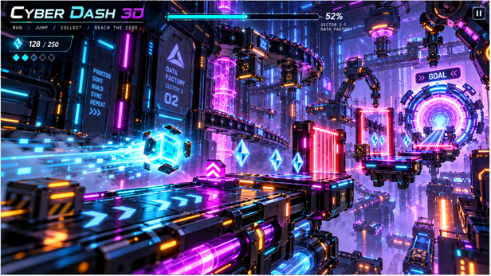

Modo Cubo
Forma principal. Salta y esquiva.
- Cubo de cristal
- Salto
- Esquiva
Cyber Dash 3D — Proyecto en desarrollo
Serás el que sobreviva a todos los niveles sin pausa y sin una meta a la que llegar.
Scroll · Entra en el juego
01 — Introducción
Cyber Dash 3D es un endless runner con niveles modo hisotria y con un multijugador y modos infinitos .

02 — Niveles + Personajes
Forma principal. Salta y esquiva.
Más velocidad. Supera nuevas zonas.
Recompensas del recorrido. Aumentan la puntuación.
03 — Escenarios + Objetos
Modo historia de un solo jugador. El primero es el más fácil y la dificultad va aumentando.
04 — Jugabilidad
El personaje avanza automáticamente y solo tenemos que saltar los obstáculos que van apareciendo.
Se puede jugar en solitario o en dúo, con dos personas en la misma pantalla. Los controles son sencillos y hacen falta buenos reflejos.
Controles: Espacio salta el jugador 1 · ↑ salta el jugador 2
05 — Victoria y Derrota
Al acabar la partida aparece una pantalla de victoria o derrota con el tiempo y las gemas conseguidas, y dos botones: reintentar o volver al menú principal.
Player 1 wins
Survival time 03:47 · Gems 38
Player 2 lost
Survival time 02:51 · Gems 21
06 — Créditos